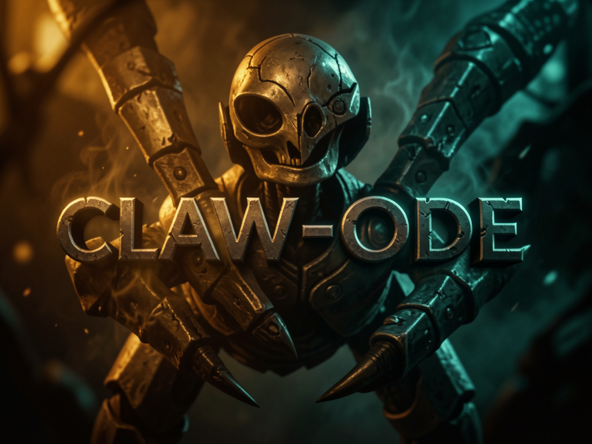

claw-code ê© uma reescrita experimental ê¢â¬â hoje um workspace Python de "porting", com um port em Rust comeê§ando ê¢â¬â que estuda como um harness de agente de linha de comando organiza comandos, ferramentas e o loop de execuê§ê£o. Projeto de pesquisa pessoal, sem afiliaê§ê£o, endosso ou vêÂnculo com a Anthropic.

O repositê³rio documenta a prê³pria origem: em marê§o de 2026, um cê³digo-fonte de harness de agente vazou publicamente. O autor estudou essa arquitetura e, em vez de manter o material vazado como fonte principal, escreveu por cima um workspace prê³prio em Python (e, na sequêªncia, comeê§ou um port em Rust) descrevendo comandos, ferramentas e mê³dulos observados ê¢â¬â sem redistribuir o cê³digo proprietê¡rio original.
src/)66 arquivos Python: manifesto do workspace, metadados de comandos/ferramentas portados, motor de query e um CLI (src/main.py) pra inspecionar tudo isso.
rust/)Workspace Cargo em estê¡gio inicial (scaffolding): crates rusty-claude-cli, runtime, commands, tools e compat-harness ê¢â¬â ainda nê£o ê© substituto funcional completo.
parity-audit compara o workspace Python contra um arquivo local (ignorado pelo git, quando presente) sê³ pra medir cobertura ê¢â¬â nê£o republica nem versiona o material original.
O pipeline ê© sequencial: primeiro o material de referêªncia foi estudado (fora do controle de versê£o), depois reescrito em Python, e agora estê¡ sendo portado, mê³dulo a mê³dulo, para Rust.
src/ê¢â â
CLI de manifesto/resumo/toolsê¢â â
Testes (unittest)ê¢â â
Port em Rust (rust/, em progresso)
Sem dependêªncias externas ê¢â¬â o workspace Python usa sê³ a biblioteca padrê£o, e o port Rust usa o toolchain padrê£o do Cargo.
Qualquer Python 3.x recente (testado com 3.12). Nenhum pacote externo ê© necessê¡rio.
# confira a versê£o python3 --version
Pra clonar o repositê³rio.
# clonar git clone git@github.com:linnoff88-dev/claw-code.git
Sê³ necessê¡rio se for explorar o port em rust/, ainda em estê¡gio de scaffolding.
# confira o cargo cargo --version
Todos os comandos abaixo rodam a partir da raiz do repositê³rio clonado, com o Python padrê£o do sistema.
Mostra quantos arquivos Python existem e o que cada mê³dulo de topo faz.
python3 -m src.main summary # imprime o resumo do workspace (66 arquivos, etc.)
Lista o manifesto completo do workspace Python ativo.
python3 -m src.main manifest # imprime o manifesto do workspace
Inspeciona os inventê¡rios de mê³dulos, comandos e ferramentas mapeados a partir do harness original.
python3 -m src.main subsystems --limit 16 python3 -m src.main commands --limit 10 python3 -m src.main tools --limit 10 # cada um lista as entradas correspondentes
Valida o workspace Python atual (22 testes na versê£o corrente).
python3 -m unittest discover -s tests -v # roda a suêÂte de verificaê§ê£o
Compara a cobertura do port contra um arquivo local ignorado pelo git, quando presente no seu ambiente.
python3 -m src.main parity-audit # sê³ funciona se vocêª tiver o arquivo local de referêªncia
O workspace Cargo em rust/ ainda ê© scaffolding ê¢â¬â crates de runtime, comandos e ferramentas com testes que extraem metadados do workspace Python.
# a partir de rust/ cargo check --workspace cargo test --workspace cargo run -p rusty-claude-cli -- --help
Segundo o prê³prio README do projeto ê¢â¬â o port ainda nê£o ê© um substituto funcional completo do harness original.
claw-code ê© um projeto experimental e independente. Ele nasceu do estudo de um vazamento pêºblico de cê³digo de harness de agente e existe, hoje, como uma reescrita prê³pria (Python, com port em Rust em progresso) dos padrêµes arquiteturais observados ê¢â¬â nê£o como cê³pia do material original, nem como produto mantido, endossado ou de qualquer forma afiliado ê Anthropic. O prê³prio README do repositê³rio declara isso explicitamente. Este guia trata o projeto como o que ele ê©: uma pesquisa pessoal de engenharia de harness, com todas as limitaê§êµes de um port em andamento.